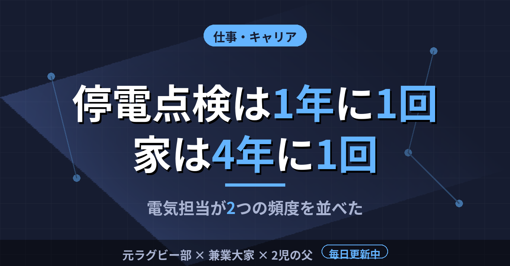
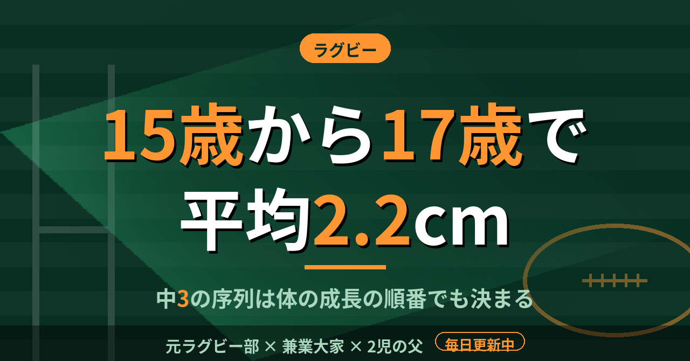
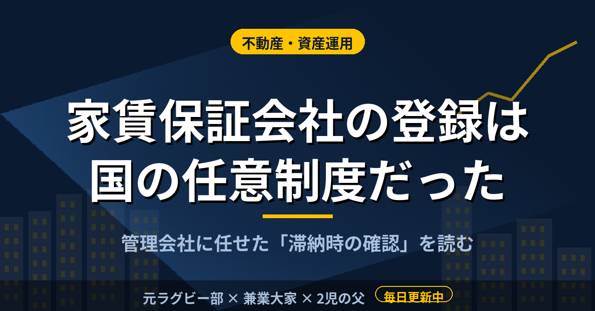

hohemaro15
ラグビー20年、不動産1棟。調べてから書く記録
このサイトについて
小学5年でラグビーを始めて、大学まで20年続けた。大阪の激戦区で6年、同志社大で4年。ポジションはユーティリティバックス。
今はメーカーで設備の電気を担当しながら、兵庫県尼崎市に木造9戸の一棟アパートを運用している。2児の父。
経験談だけで終わらせないために、書く前に必ず制度と統計を調べることにしている。数字が確認できなかった話は書かない。
書いていること
ラグビー
小5から大学まで20年。大阪の激戦区で見たこと、カテゴリが上がるたびに起きたこと。
不動産・資産運用
2016年に検討を始めて2026年に1棟目。判断基準と、断り続けた10年の話。
健康・トレーニング
増量の失敗と成功、サプリで肝臓の数値を悪くした経験、続けている設計。
子育て・家族
2歳と0歳を育てながらの時間の使い方と、資産形成の時間軸。
最近の記事
-
 子育て・家族
子育て・家族
13歳未満は2回、経鼻なら1回。2歳と0歳の父がインフルワクチンの回数を数えた
2歳と0歳の2人分で、インフルエンザの予防接種に何回通うことになるのか。数えようとして、僕は回数がどう決まるのかを知らなかったことに気づいた。今年は流行も早い。調べたことを順に並べておく。…
-

仕事・キャリア工場の停電点検は1年に1回、家の電気は4年に1回。設備の電気担当が頻度を並べた
僕の仕事は、化学メーカーの設備の電気担当だ。関東の工場から京都の研究所に移っても、相手にしているのは変わらず「建物に入ってくる電気」である。兼業で持っているアパートの電気設備について調べていて、同じ電気でも建物によって点…
-
 不動産・資産運用
不動産・資産運用
徒歩1分は80m、ワンルームは25㎡から。東京で利回り7％を探して見えた2つの線
2棟目を探し始めて、東京の新築一棟の提案も見るようになった。利回り6.5〜7.5％の帯に入ってくるものは、部屋が極端に狭いか、駅から遠いかのどちらかだった。最初は巡り合わせだと思っていたが、並べて見ているうちに、そうなる…
-

ラグビー15歳から17歳で平均2.2cm。高校で8cm伸びた僕は中3で先発を外れていた
中3の春、僕は副キャプテンになった。同じ年に、SOの先発を外れた。理由は体の細さと、スキルの伸び悩みだ。試合にはCTBで、なんとか出してもらっていた。…
-
 ゴルフ
ゴルフ
飛ぶボールの規制、アマは5ヤード以下。月1回以上回る僕が2030年の線を読んだ
社会人になってからゴルフを本格的に始め、シーズン中は月2〜3回ラウンドしている。取引先と回る日は、ティーショットの飛距離がその日の話題になりやすい。その飛距離に、ルールを作る側が上限をかけ直そうとしている。…
-

不動産・資産運用家賃保証会社の国の登録は任意、要件は純資産1,000万円。9戸の大家が中身を読んだ
1棟目の管理会社に任せている仕事を書き出すと、リーシング、電話の一次受け、家賃の集金、そして「滞納時の保証会社への確認」が並ぶ。月5,000円の定額で頼んでいる半管理の中で、最後の一行だけは、中身をよく知らないまま契約し…